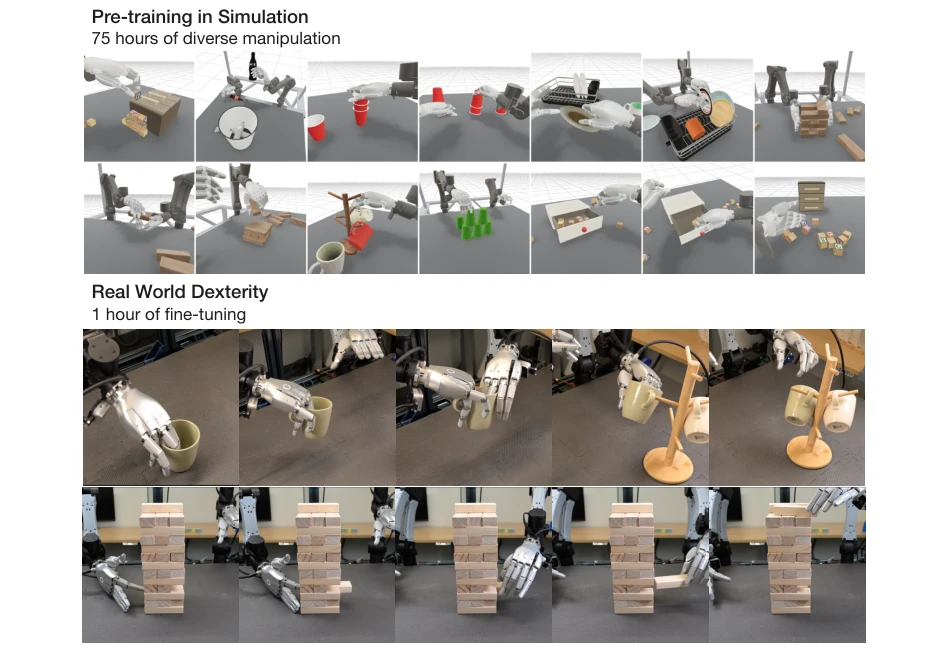
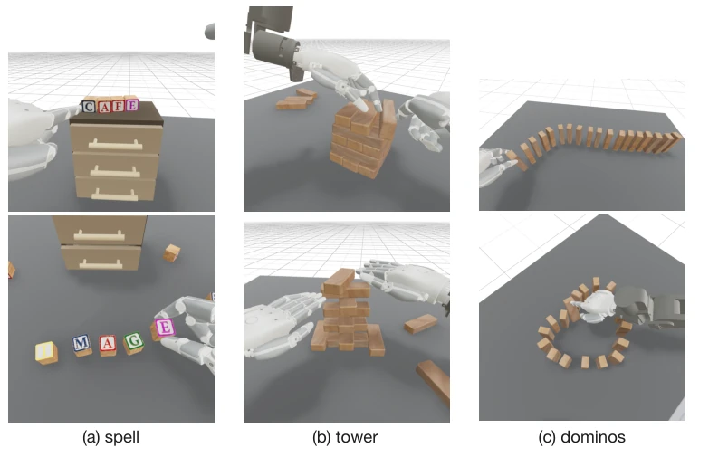
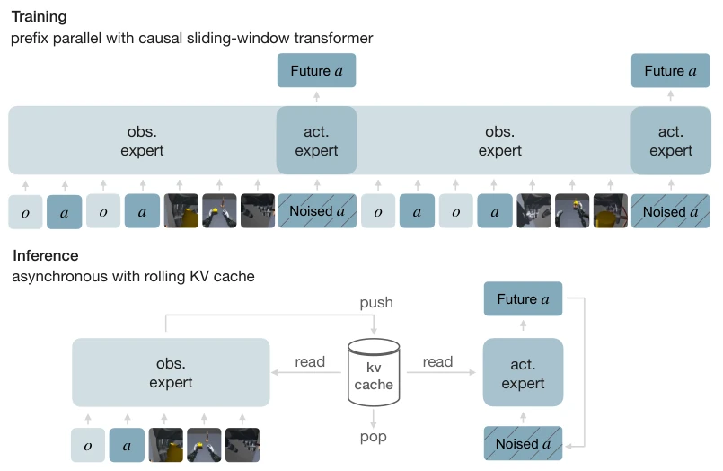
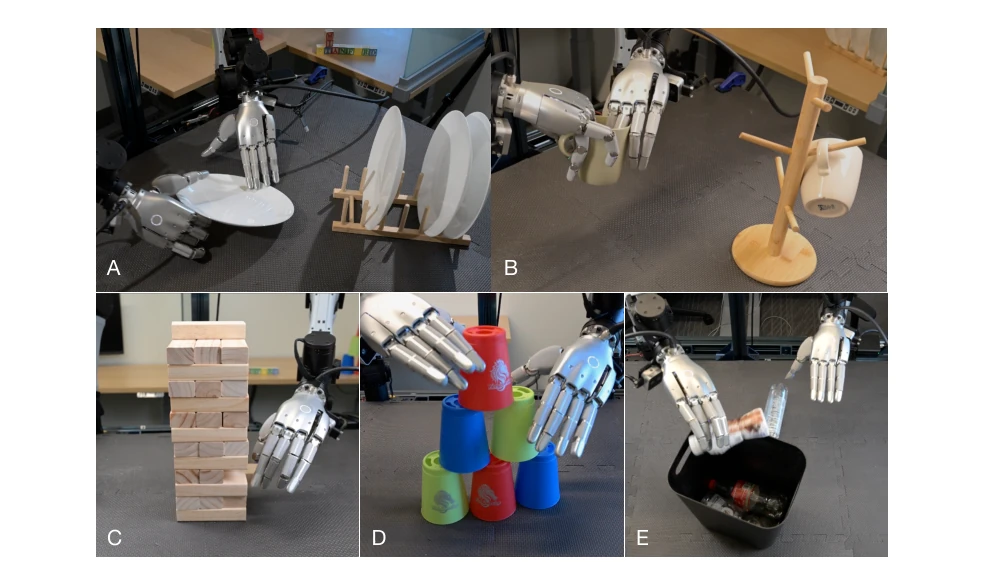
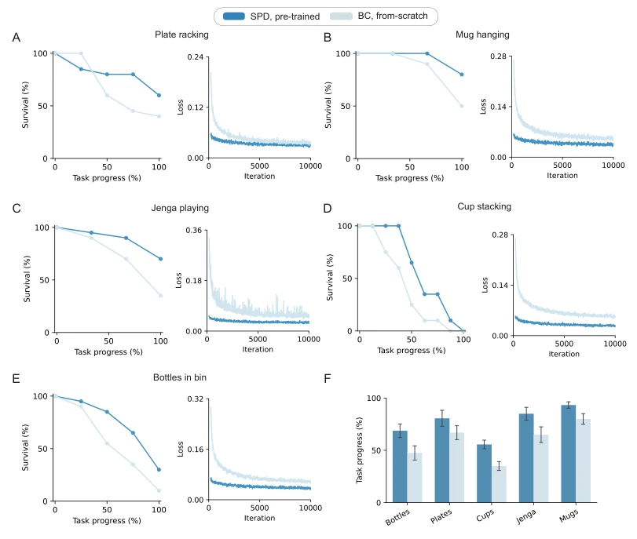
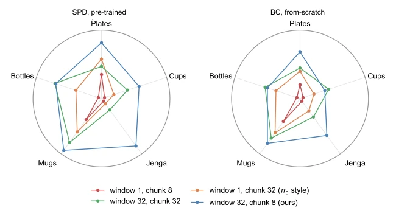

This paper finally rescues dexterous hand pre-training from being merely a "parallel gripper's toy". SPD leverages VR to accumulate 75 hours of data in simulation, saving real-robot wear and labor costs; this approach is indeed clever. However, do not celebrate too early; if simulation physics parameters are not tuned well, the real robot will expose the flaws upon contact, which the authors themselves admitted. Moreover, although 75 hours of data is substantial, the scenarios remain limited; how long can the generalization actually sustain? After all, "friction" in simulation and "friction" in the real robot are often two different matters. Nevertheless, demonstrating that VR teleoperation is a viable pre-training source is a solid step, at least much more reliable than those relying on human videos to infer actions.
研究动机Motivation
灵巧操作数据太缺了。真机遥操作成本高、效率低 [1]。人类视频虽然多，但涉及接触，姿态估计和重定向损失大，且存在 embodiment gap [6, 25]。现有预训练多集中在平行夹爪 [8, 9]，灵巧手因接触复杂、自由度多，难以规模化。SPD 试图用仿真遥操作解决数据稀缺问题，避免真机依赖，同时保持动作标签的准确性。这填补了多指手预训练的数据空白，让仿真成为可行的替代方案。
Dexterous manipulation data is severely scarce. Real-robot teleoperation is costly and inefficient [1]. Although human videos are abundant, they involve contact, resulting in significant pose estimation and retargeting losses, and suffer from an embodiment gap [6, 25]. Existing pre-training mostly concentrates on parallel grippers [8, 9]; dexterous hands are difficult to scale due to complex contacts and high degrees of freedom. SPD attempts to address the data scarcity problem using simulation teleoperation, avoiding real-robot dependency while maintaining action label accuracy. This fills the data gap in multi-fingered hand pre-training, making simulation a viable alternative.
The core is the SPD framework, comprising two systems: VR teleoperation and real-robot teleoperation, with hardware alignment (camera, hand, arm). The VR side uses Quest 3 to control MuJoCo simulation, with 5 operators accumulating 75 hours of data covering 6 scenarios. After data cleaning, a Diffusion Transformer is trained. The policy architecture employs a causal Transformer, taking proprioception, vision, and action tokens as input. During training, causal masking is used for parallel denoising, while inference utilizes sliding window attention plus KV Cache. The key innovation lies in directly aligning VR data with real-robot embodiment, requiring no retargeting, and enhancing reactivity through historical conditioning. This design allows simulation data to be directly transferred to the real robot, reducing the sim-to-real gap.

Figure 1: Simulation pre-training for dexterity. Top: 75 hours of teleoperated simulation data spanning six scenes and hundreds of object instances, covering contact-rich low-level dexterous behavior. Bottom: the pre-trained policy adapts to the real-world dexterous tasks shown, with 1 hour of real demonstrations.

Figure 2: Diverse operator strategies on open-ended simulation tasks. Each pair of frames shows two distinct strategies the same operator pool produced on a single long-horizon task: (a) spelling a target word from a pile of letter blocks, (b) stacking blocks into a Jenga tower, and (c) arranging dominoes into a chain.

Figure 3: Policy Architecture. Our policy is a diffusion transformer that consumes a sequence of proprioception (o), action (a), multi-view images, and noised action chunks as interleaved tokens. In training, the model denoises all action chunks simultaneously with a causal mask, amortizing its sequence length. We additionally use sliding window attention in training, with a matched rolling KV cache for efficient inference.
Tested on 5 real-world tasks (stacking cups, inserting blocks, etc.), using only 1-2 hours of real-robot data for fine-tuning per task. Compared to a BC baseline trained from scratch, SPD performs better on all tasks with lower loss convergence. Ablation studies show that historical conditioning combined with short action chunks (w=32, c=8) yields the best results, improving by 18 percentage points over the no-history configuration. This demonstrates the effectiveness of simulation pre-training for real-world dexterous manipulation. This is much more efficient than training relying solely on real-robot data, especially for high-degree-of-freedom systems.

Figure 4: Autonomous rollouts of five tasks. (A) plate racking: lifting plates and racking them in a dish rack; (B) mug hanging: hanging a mug on a mug tree after a bimanual handover; (C) jenga playing: pushing a block out of the tower with one hand, pulling it free with the other, and placing it on top; (D) cup stacking: unstacking nested cups and building a pyramid; (E) bottles in bin: tossing bottles into a bin.

Figure 5: Simulation pre-training improves real-world dexterity. We evaluate five bimanual dexterous tasks on the real robot, comparing SPD pre-trained checkpoints to those trained from scratch (BC). In (A-E), we report the fraction of trials that reach each successive manipulation stage and plot training loss curves. In (F), we plot average task progress; error bars show standard error.

Figure 6: Ablations on history conditioning and chunk size. Visualization of the average task progress in Table 1, for policies pre-trained with SPD (left) and trained from scratch (right).